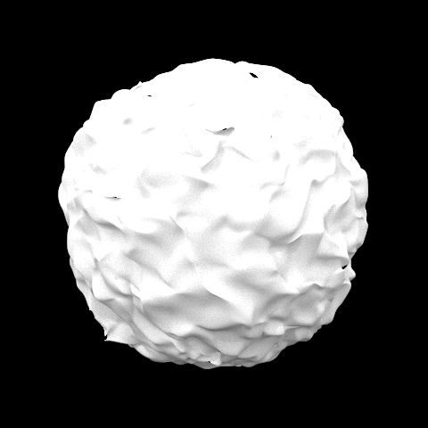
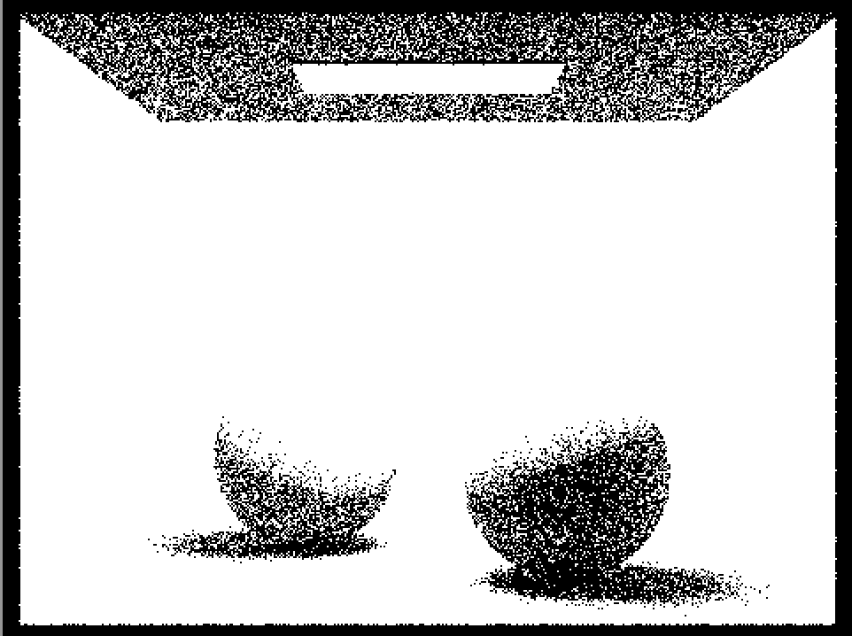

In this project we began the process of creating a physically based renderer. With this renderer, we add on the ability to ray trace and path trace incoming light that bounce off of objects and reflect off one another. This is amazing for so many different reasons. We are moving toward a very photo realistic renderer at this point and can recreate almost any scene we need with the algorithms we know. In this project we began with giving the renderer the ability to generate rays, then built on top of that by speeding up the process of rendering with Bounding Volume Hierarchies. This part (part 2) was definitely the most challenging part for us. We spent about 2 days debugging it, but eventually got it up and working. Our issue was mostly about our manipulation of pointers, but afterwards we felt pretty confident about what we took away from this mistake. Past this, we implemented algorithms to allow light sources to illuminate the rooms in Part 3, first with zero bounce and next with one bounce and importance sampling. Then in part 4 we implemented reflections for rays that bounce off surfaces multiple times, namely global illumination. Task 5, adaptive sampling, has us speed up the renderer by testing for convergence to see if we can stop tracing the path of the ray. All of this built on top of one another gives us a realistic renderer that begins to model real life. In the next project, we begin to implement real world textures that make reflections even more challenging and awesome to render, and scenes that some of us may see in day to day life in things such as video games. This project was challenging but worthwhile as we built something that is used daily by so many different applications.
Part 1: Ray Generation and Intersection
To implement the ray generation, we first convert the image coordinates (x, y) to its corresponding
coordinates in the camera space through scaling and translation. Specifically, we convert x in
the image space using 2 * tan(0.5 * hFovRad) * x - tan(0.5 * hFovRad), where hFovRad and
vFovRad are hFov and vFov converted in radians. And y is converted
using 2 * tan(0.5 * vFovRad) * y - tan(0.5 * vFovRad). Having figured out the corresponding coordinates of x and y
in the camera space, we now have the origin and direction to create a ray, which is by instantiation ray with pos being
the origin o of the ray while c2w * Vector3D(xcam, ycam, -1).unit() as the direction d of
the ray. The reason why we multiplied the camera space direction vector by c2w is to translate it into world space. And we normalized
the ray direction vector as required. Lastly, we initialized min_t and max_t to nclip and fclip,
respectively.
For ray-triangle intersection, we used the Moller-Trumbore algorithm to compute the intersection of the ray and triangle, if any. Specifically,
we are used the equation 1 / (S_1 · E_1) * Vector3D(S_2 · E_2, S_1 · S, S_2 · D) to get the result Vector3D(t, b_1, b_2),
where E_1 = P_1 - P_0, E_2 = P_2 - P_0, S = O - P_0, S_1 = D × E_2, S_2 = S × E_1, t = time of intersection, b_1, b_2 = barycentric coefficients of triangle
equation where the intersection happened. After computing the values of t, b_1, and b_2, we check to see if the values indicate there is an intersection or
not. If t >= 0, 0 <= b_1 <= 1, 0 <= b_2 <= 1, and 0 <= 1 - b_1 - b_2 <= 1, then there is a valid intersection between the ray and the triangle.
However, if that condition is not satisfied, the ray doesn't intersect the triangle.
For ray-sphere intersection, we used the equation from the Lecture 9 slide to help compute the intersection between a given ray and sphere, if any. To summarize,
we substitute the ray equation into the sphere equation such that the manitude of the vector between the point of intersection and center of sphere is R^2.
Throught the equation, we solve for the time(s) of intersection using the quadratic formula t = (-b ± sqrt(b^2 - 4ac))/(2a), where >a = d · d, b =
2(o - c) · d, and c = (o - c) · (o - c) - R^2. There could be either 0, 1, or 2 intersection between the ray and the sphere. We check
if both t are less than 0, then there is no intersection. If there is only one distinct value of t that is greater than or equal to 0, then there is one intersection. Otherwise, in the
case of two possible values of t, assigns the smaller one to the corresponding field in the intersection struct. In addition to checking against 0, we also check to
make sure that the value of t is within the range of r.min_t and r.max_t. The intersection is only valid if it is within this range.
|
|

|
|
|
|
Part 2: Bounding Volume Hierarchy (BVH)
On a high level, our BVH construction algorithms constructs the hierarchy by creating a leaf node if the number of primitives at the node is
less than max_leaf_size. To create the leaf node, we assign NULL to both l and r of the leaf node and assign
start and end to the start and end of the primitives vector. Otherwise, we create an internal node after partitioning the primitives
into two roughly partitions based on their values on the longest partition and assign the left and right children BVH node to be the two partitions, respectively.
We pick the splitting point by first figuring out the longest axis through comparing the x, y, z coordinates of the extent of the bounding box. Then,
given the longest axis, we sort the primitives vector based on their values for the longest axis. With the sorted primitives vector, we can compute the middle primitive,
whose value for the longest axis is less than half of the primitives and great than the other half of the primitives. We can use this middle primitive as the splitting
point to partition the vector of primitives into two for the left and right BVH nodes. This is a good splitting point because it ensure that the split is as even as possible,
preventing the bug of having one side with zero primitives and entering infinite recursion. After partitioning primitives into two groups, we recursively call the
construct_bvh and assign the results to left and right (i.e., node->l = construct_bvh(start, secondStart, max_leaf_size); and node->r = construct_bvh(secondStart,
end, max_leaf_size);).
The BVH accelerated the rendering time for large .dae files by a lot. Without the BVH acceleration, generating dae/sky/bench.dae took 100.3344s,
dae/sky/blob.dae took 521.6955s, dae/sky/CBlucy.dae took 307.0306s, and dae/sky/maxplanck.dae took 60.6932s. With the BVH
acceleration, generating dae/sky/bench.dae took 0.1644s, dae/sky/blob.dae took 0.8303s, dae/sky/CBlucy.dae took 0.0530s,
and dae/sky/maxplanck.dae took 0.0827s. For better readability, these results are summarized in the table below. We can see that with BVH, the computation
time accelerated by about 600 times.
| Image | Time Without BVH Acceleration | Time With BVH Acceleration |
|---|---|---|
| dae/sky/bench.dae | 100.3344s | 0.1644 |
| dae/sky/blob.dae | 521.6955s | 0.8303s |
| dae/sky/CBlucy.dae | 307.0306s | 0.0530 |
| dae/sky/maxplanck.dae | 60.6932s | 0.0827s |
|
|

|

|

|
Part 3: Direct Illumination
For direct lighting with uniform hemisphere, on a high level, for num_samples, we sample a ray direction uniformly in a hemisphere, then create
a ray and find the intersection, and lastly update the Monte Carlo estimater value. Specifically, for every iteration, we call hemisphereSampler->get_sample()
to randomly generate a Vector3D that is the direction of ray in the object space. Then we convert the Vector3D to world space using the o2w transformation
matrix. Then using the direction vector we sampled, we generate a ray using Ray ray = Ray(hit_p + 0.001 * sampled_ray_world, sampled_ray_world);, where the
origin is hit_p + 0.001 * sampled_ray_world and direction is sampled_ray_world. With the generated ray, we call the intersection method
by bool hit = bvh->intersect(ray, &isect_light); to find out the intersection with light, if any. If we see there is an intersection, then we add it to the Monte
Carlo estimator using the object space vectors. Lastly, the method one_bounce_radiance will call this method to compute the Monte Carlo estmate value.
For direct lighting with importance sampling, we iterate over every single light vector and check if it is a point light source or not. If it is point light source, we only
sample once using sample_L and generate the corresponding ray using hit_p as the origin and the randomly sampled direction between p and
the light source as the direction. And we set min_t and max_t to be 0.001 and distToLight. Then we call intersect to see if this ray has an intersection. If there is not intersection, we compute the corresponding value
in the reflection equation. On the other hand, if this light source is not a point light source, we sample ns_area_light number of times. And for each iteration of sampling, we use the
sample procedure just like the one for delta light source. At the end of the iteration, we average it by ns_area_light before accumulating it to the result.
|
|
|
|
|
|
|
|
|
|
For direct lighting with uniform sampling, we randonly sample in a unit hemisphere with equal probability. This type of sampling results in quite noisy images, but it does converge to the correct result as we increase the number of times we sample. On the other hand, the importance sampling method does similart thing but converges faster because it sample all the lights directly instead of uniformly in a hemisphere. This conclusion can be proven by our images about illustrating the difference between uniform sampling and lighting sampling. We can see that the one with uniform sampling one is more noisy than the lighting sampling one when we keep all the parameters to be the same.
Part 4: Global Illumination
|

|
|
Bullet 3: For this section, we rendered the sphere image once with direct illumination and once with indirect illumination. For direct illumination, this means only zero bounce illumination and one bounce illumination. This direct illumination image produces an image with the light on the ceiling lit, as this is zero bounce illumination. The one bounce illumination is what lights up the rest of the room with the strength of the light given off by the zero bounce illumination. Doing one bounce once, however, only produces the light that lights up the room, and the shadows produced by those rays. Because there are no bounces off of other objects being calculated, we are left with the dark shadows under the spheres and the ceiling. The ceiling is not lit because we need light to reflect off other object to strike the direction of the ceiling (where the light is) as well. So, we are left with a lit room, with dark shadows under the spheres and on the ceiling as well. With indirect illumination only, we get rid of one bounce and
|
|
|
Bullet 4: The images rendered for this part only differ in the max_ray_depth, which displays a main difference, with one outlier being m = 0. In the case of max_ray_depth being 0, this is zero bounce illumination, and so all we have is the light at the top being turned on, but there is no bouncing so the rest is just black. In the case of max_ray_depth being 1, we have zero bounce and one bounce illumination together, so we get reflections of the first surfaces that the light hits (the walls and the bunny), but since there are no second bounces, the ceiling is not hit and shows up as black. At max_ray_depth being 2, we have two bounces, and so the ceiling is now lit up with the bounces, and the corners that used to have some dark shadows get slightly brighter. Past this, the difference is that the shadows in the corners of the rooms or where the walls meet get brighter and brighter everytime we increase the max_ray depth, since we have more bounces and reflections to compute and illuminate. Intuitively, this is because we trace the paths of light for longer, so light keeps bouncing and reflecting off the surfaces, and we record these reflections and the illumination it gives off so our scene gets brighter. The interesting thing is that this trend can be seen with max_ray_depth 2-3, but, seems like there are some diminishing returns, since 100 does not seem too different to say it is worth rendering for that much longer.
|
|
|
|
|
|
|
|
Bullet 5: The images rendered here of the spheres show global illumination at different levels of sampling. In particular, we have images with 1 sample, 2 samples, 4, 8, 16, 32, 64, and 1024 samples, all using 4 light rays. These images have some key differences, however not much in the lighting themselves, apart from the one sample picture. In the one sample outlier, we see both a very grainy, noisy image, that has no color (black and white). This is because we have only one sample so we cannot gather all the data needed to render correctly. Past this, we get some color in the 2 samples image, although it is still a bit washed out and noisy. In general, the more we increase the samples, the smoother the image gets. To see this, note how the 4 sample image compares with 64. Between these increases, the image gets noticeably smoother and less noisy because we can take in more samples per pixel. The biggest difference comes with 64 compared to 1024. Here, the image gets extremely smooth in the case of 1024 samples per pixel. There is very little noise, and the bouncing reflections are very clear. For example, we see the purple bouncing off the right sphere and the red bouncing off the left, as well as the shadows having a bit of purple and red glare as well. The 1024 samples per pixel image shows all of these qualities the best with little to no noise, while the 64 samples image has a bit of noise (but still much less than the others). Overall, the images get much less noisy as we increase the samples per pixel and the colors of the image are much more clear and vibrant as well.
|

|
|
|
|
|

|
|
|
|
|
Part 5: Adaptive Sampling
Implementation: For the implementation, we really just updated raytrace_pixel. The edits we made are first instantiating s1 and s2, and a count for the samples we have taken. In the for loop, we added a check to see if the current number of samples (count) is != 0 (to avoid exiting on the first run), and if count % samplesperBatch == 0. If it was, we check if it has converged. We do this in one if statement with all the math together to avoid any possible precision issues since we saw too many at this point. We just fulfilled the formula by calculating 1.96 * sd (calculated inside the if) / sqrt(n) <= maxTolerance * average. If this was true, we have converged and can stop sampling. We fill the rate array with the samples we actually took (count) and the division factor for the estimate, everything that was num_samples becomes count. The only explanation needed is why we added 1 to count when it was used and not subtracting where it said in the formula. This is because count is one sample behind the real count of samples we have taken so far. So everywhere that count should be used, we used count + 1. Past this, we divided by count and filled the sample buffer and count as usual.
|
|
|
Website: https://cal-cs184-student.github.io/sp22-project-webpages-Linda0501/proj3/index.html